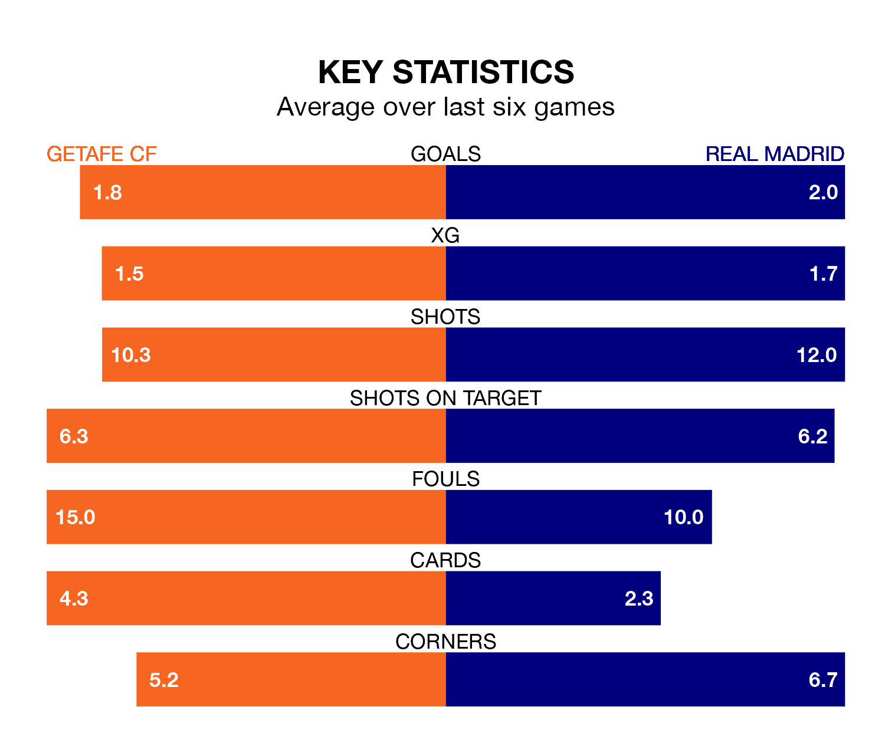

Real Madrid are strong favourites to take all three points despite Getafe CF's home advantage in Thursday's late match at Coliseum Alfonso Pérez.
*Betting Company* are offering odds of 1.57 on Madrid sealing the win, with the visitors sitting second in La Liga table.
Getafe, who are 10th in the league and 25 points behind Madrid, are priced at 5.5 to win. A draw is set at 3.85.
With 45 goals in 21 games so far this season, Madrid are the league's second-highest scorers with 2.1 goals per game. And they are conceding fewer than average, letting in 14 goals at a rate of 0.7 per game.
Getafe, meanwhile, are average scorers, with 1.3 goals per game. They have also conceded 1.3 goals per game.
In Jude Bellingham, the visitors have the league's sharpest shooter so far this season. He has notched 14 goals in 18 appearances.
The home team's top scorer, with 14 goals in 21 games, is Borja Mayoral.
Getafe are in mixed form in La Liga, with three wins and a draw from their last six games.
With five wins and a draw over that period, Madrid's form is much better – they have taken 16 points from 18, compared to Getafe's 10.
In the last 10 years, Getafe and Madrid have played each other on 18 occasions. Getafe won one of them, Madrid 15, and they drew twice.
On average, Getafe scored 0.5 goals and Madrid 2.3 in those matches.
Their last meeting was on September 2, when Madrid won 2-1 at home.
Getafe's last match was on Monday, a 2-0 win against Granada CF, with Mason Greenwood and Mayoral Moya getting the goals for Getafe.
Madrid beat UD Las Palmas 2-1 last time out, on Saturday, with Aurélien Tchouaméni and Vinicius Junior on the scoresheet.
Thursday's match will be refereed by Ricardo De Burgos Bengoetxea, who has taken charge of 10 La Liga games so far this season, issuing two red cards and booking 39 players. He has awarded one penalty.
The last Getafe game De Burgos Bengoetxea refereed was a 1-0 home win against Cádiz on November 6. His last Madrid match was their 1-1 draw away at Sevilla on October 21.
Updated: 10:03 (UTC), 30/01/24